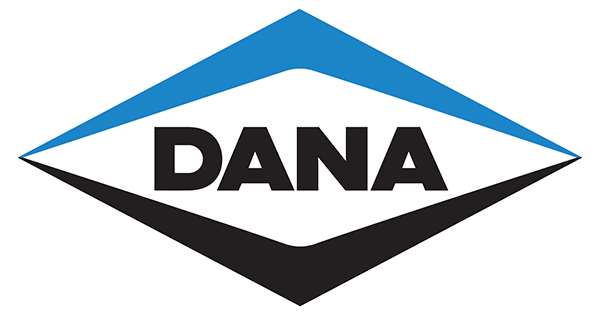

A Prime Mangueiras e Conexões é especializada no fornecimento de mangueiras hidráulicas, conexões industriais, terminais hidráulicos e acessórios para diversos segmentos. Atuamos em Glorinha e região metropolitana oferecendo atendimento especializado, produtos de alta qualidade, suporte técnico e entrega rápida para nossos clientes.

Com alguns anos de experiência no segmento industrial, Heider Lacerda acumulou vasto conhecimento técnico em sistemas hidráulicos, conexões e manutenção industrial. Sua trajetória profissional foi construída lado a lado com grandes empresas e desafios do setor, trazendo para a Prime Mangueiras e Conexões a expertise necessária para oferecer soluções seguras, eficientes e de alta qualidade.
Conheça algumas das empresas que confiam em nossos produtos, serviços e atendimento especializado.
